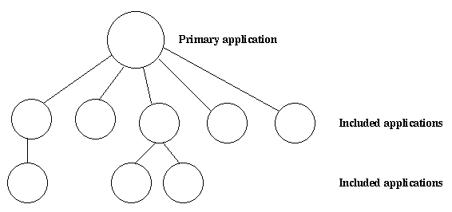

一个应用可以包含其他应用。一个被包含的应用有它自己的应用目录和 .app 文件，但是它是作为另一个应用的监督树的一部分被启动的。
一个应用只能被一个其他的应用所包含。
一个被包含的应用也可以包含其他应用。
一个不被任何其他应用所包含的应用被称之为主应用。

应用控制器在加载一个主应用的时候会自动加载任何被包含的应用，但并不会启动它们。被包含的应用的顶层督程应由进行包含的应用的某个督程来启动。
要包含哪些应用是由 .app 文件中的 included_applications 键所定义个。
{application, prim_app,
[{description, "Tree application"},
{vsn, "1"},
{modules, [prim_app_cb, prim_app_sup, prim_app_server]},
{registered, [prim_app_server]},
{included_applications, [incl_app]},
{applications, [kernel, stdlib, sasl]},
{mod, {prim_app_cb,[]}},
{env, [{file, "/usr/local/log"}]}
]}.
一个被包含的应用的监督树是作为包含它的应用的监督树的一部分启动的。如果需要在包含与被包含的应用的进程之间进行同步的话，则可以使用启动阶段。
启动阶段是由在 .app 文件中的 start_phases 键定义的，它是 {Phase, PhaseArgs} 元组的一个列表，其中 Phase 是一个原子 PhaseArgs 是一个值。同时，进行包含的应用中的 mod 键的值必须被设置为 {application_starter,[Module,StartArgs]} ，其中 Module 和前面一样是应用回调模块， StartArgs 是提供给回调函数 Module:start/2 的参数。
{application, prim_app,
[{description, "Tree application"},
{vsn, "1"},
{modules, [prim_app_cb, prim_app_sup, prim_app_server]},
{registered, [prim_app_server]},
{included_applications, [incl_app]},
{start_phases, [{init,[]}, {go,[]}]},
{applications, [kernel, stdlib, sasl]},
{mod, {application_starter,[prim_app_cb,[]]}},
{env, [{file, "/usr/local/log"}]}
]}.
{application, incl_app,
[{description, "Included application"},
{vsn, "1"},
{modules, [incl_app_cb, incl_app_sup, incl_app_server]},
{registered, []},
{start_phases, [{go,[]}]},
{applications, [kernel, stdlib, sasl]},
{mod, {incl_app_cb,[]}}
]}.
当启动包含了其他应用的主应用时，主应用是按照正常的方式启动：应用控制器为该应用创建一个应用主程序，然后该应用主程序调用 Module:start(normal, StartArgs) 来启动顶层督程。
然后，对于主应用和自上而下的每个被包含的应用，应用主程序会按顺序和每个已定义的阶段调用 Module:start_phase(Phase, Type, PhaseArgs) 。注意如果某个被包含的应用没有定义某个阶段，那么就不会针对该阶段和该应用调用这个函数。
对于被包含的应用的 .app 文件有以下要求：
当启动上面定义的 prim_app 时，在 application:start(prim_app) 返回值之前，应用控制器会调用以下回调函数：
application:start(prim_app)
=> prim_app_cb:start(normal, [])
=> prim_app_cb:start_phase(init, normal, [])
=> prim_app_cb:start_phase(go, normal, [])
=> incl_app_cb:start_phase(go, normal, [])
ok